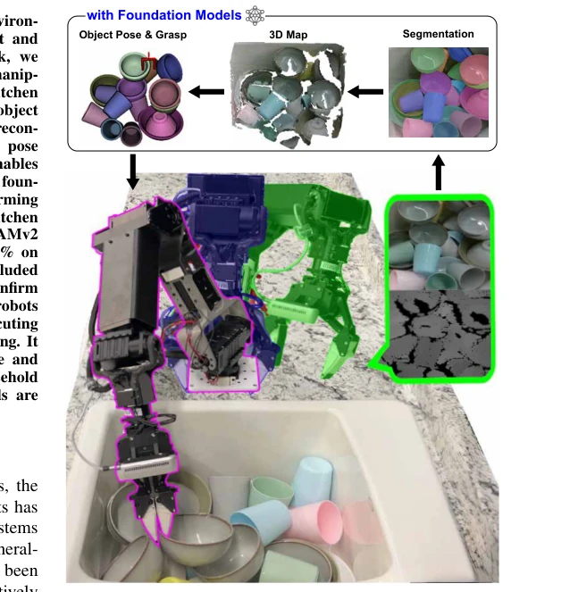
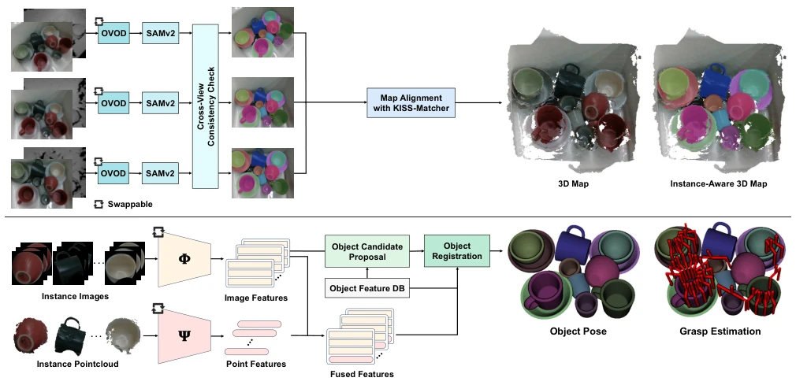
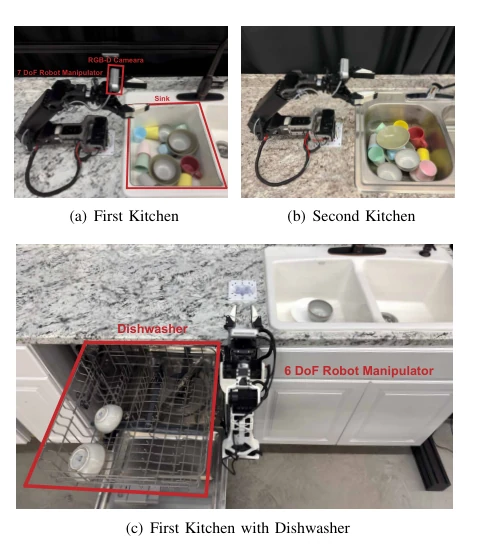
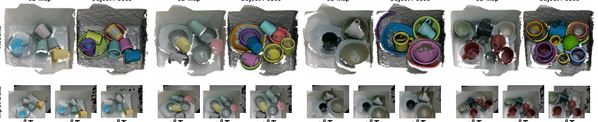
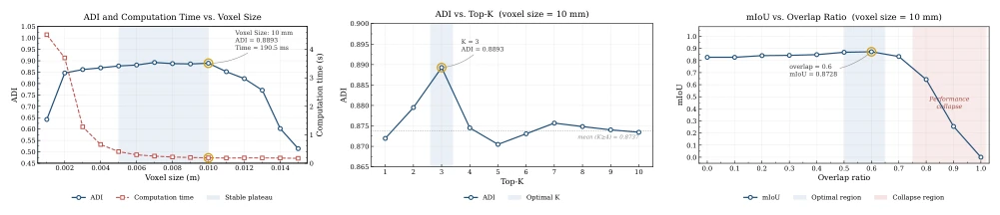
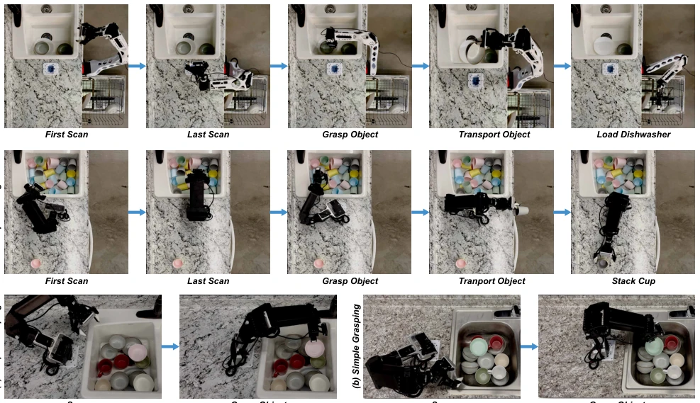

Kitchen Robotic Manipulation utilizing Foundation Models
Myung-Hwan Jeon, Sankalp Yamsani, Joohyung Kim abspdf
论文点评Review
这篇论文试图用“瑞士军刀”式的模块化架构解决厨房机器人感知难题，主打一个“即插即用”的 Foundation Models 大杂烩。优点很明显：不针对特定环境微调，靠 LLMDet+SAMv2+DINOv2+GeoTransformer 这套组合拳，在杂乱厨房场景下拿到了 89.12% 的 ADI 精度，确实比传统方法强。但槽点也不少：首先，它严重依赖预定义的 CAD 模型库存，这跟真正的“开放世界”还有距离，换个没建库的杯子就歇菜；其次，物理抓取失败（打滑）归咎于夹爪设计，算法背锅；最后，7.7 秒的端到端耗时对于实时交互略显拖沓。总的来说，这是一个工程上很稳健的“缝合怪”，虽然没发明新算法，但把现有 FM 拼得挺顺，适合那些不想自己炼丹的机器人团队。
This paper attempts to solve the perception challenges of kitchen robots using a "Swiss Army knife"-style modular architecture, focusing on a "plug-and-play" mishmash of Foundation Models. The advantages are obvious: without fine-tuning for specific environments, relying on this combination of LLMDet+SAMv2+DINOv2+GeoTransformer, it achieved 89.12% ADI accuracy in cluttered kitchen scenarios, indeed stronger than traditional methods. But there are also many drawbacks: first, it heavily relies on a predefined CAD model inventory, which is still far from a true "open world"; if you switch to a cup not in the library, it fails; second, physical grasp failures (slipping) are attributed to gripper design, with the algorithm taking the blame; finally, the 7.7-second end-to-end latency is slightly sluggish for real-time interaction. Overall, this is a very robust engineering "patchwork monster", although it did not invent new algorithms, it pieced together existing FMs quite smoothly, suitable for robot teams that do not wish to train models themselves.
研究动机Motivation
将机器人部署到非结构化的人类环境（如厨房）一直是具身智能的圣杯，核心痛点在于感知系统必须兼具鲁棒性与适应性。传统视觉方案严重依赖特定任务数据集和监督学习，泛化能力差，一旦环境变化（如物品摆放、光照）就失效 [1, 2, 3, 4]。虽然端到端策略（如 RT-2 [31], OpenVLA [32]）展现了跨任务泛化潜力，但它们将感知与控制耦合在单一模型中，无法复用不同的运动规划器或传感器配置，且缺乏显式的 6D 位姿信息，难以执行需要精确空间约束的操作（如叠杯子）。此外，现有基于 FM 的方法多侧重于单一模态或特定任务，缺乏系统性的模块化集成方案来应对厨房场景的遮挡与杂乱。本文旨在填补这一空白，提出一种无需环境微调的模块化感知管线，利用 Foundation Models 的强大泛化性解决厨房餐具处理的感知难题。
Deploying robots into unstructured human environments (such as kitchens) has always been the holy grail of embodied intelligence, with the core pain point lying in the perception system needing to possess both robustness and adaptability. Traditional vision schemes heavily rely on specific task datasets and supervised learning, with poor generalization ability; once the environment changes (e.g., item placement, lighting), they fail [1, 2, 3, 4]. Although end-to-end strategies (such as RT-2 [31], OpenVLA [32]) demonstrate cross-task generalization potential, they couple perception and control in a single model, cannot reuse different motion planners or sensor configurations, and lack explicit 6D pose information, making it difficult to execute operations requiring precise spatial constraints (such as stacking cups). Furthermore, existing FM-based methods mostly focus on single modalities or specific tasks, lacking systematic modular integration schemes to handle occlusion and clutter in kitchen scenarios. This paper aims to fill this gap, proposing a modular perception pipeline without environment fine-tuning, utilizing the powerful generalization of Foundation Models to solve perception challenges in kitchen tableware handling.

Fig. 1. The robot manipulator scans the workspace and processes the collected data using a proposed perception pipeline built on multiple foundation models. Based on these results, it estimates the pose and grasp configurations of the dishware, enabling the system to manipulate the items and demonstrate generalizable perception in kitchen environments.
方法Method
整体流程基于“扫描 - 感知 - 规划”架构。首先，机械臂携带 RGB-D 相机扫描工作区，获取多视角图像。感知管线分为四步：1) 多视角实例分割：利用开放词汇检测（OVOD，如 LLMDet）生成边界框提示 SAMv2，通过跨视图投影与 IoU 检查确保同一物体在不同视角下 ID 一致。2) 实例感知 3D 重建：将分割掩码映射到点云，构建带语义 ID 的 3D 地图，辅以 ICP 精配准。3) 2D-3D 特征融合：这是核心创新。视觉基础模型（Φ）提取图像特征，几何基础模型（Ψ）提取点云特征，经 L2 归一化后简单拼接，无需额外训练即可互补语义与几何信息。4) 位姿估计与抓取：基于预存 CAD 模型库，通过特征相似度筛选候选对象，再进行粗配准与 ICP 精配准获取 6D 位姿，最后结合逆运动学过滤可行抓取位姿。该设计允许灵活替换各模块中的 Foundation Models（如 DINOv2, GeoTransformer），通过系统评估找到最优组合，实现了感知与控制的解耦。
The overall process is based on a "Scan-Perceive-Plan" architecture. First, the robotic arm carries an RGB-D camera to scan the workspace, acquiring multi-view images. The perception pipeline is divided into four steps: 1) Multi-view instance segmentation: Using open-vocabulary detection (OVOD, such as LLMDet) to generate bounding box prompts for SAMv2, ensuring consistent IDs for the same object across different views through cross-view projection and IoU checks. 2) Instance-aware 3D reconstruction: Mapping segmentation masks to point clouds, constructing a 3D map with semantic IDs, assisted by ICP fine registration. 3) 2D-3D feature fusion: This is the core innovation. Visual foundation models (Φ) extract image features, geometric foundation models (Ψ) extract point cloud features, which are simply concatenated after L2 normalization, complementing semantic and geometric information without additional training. 4) Pose estimation and grasping: Based on a pre-stored CAD model library, candidate objects are filtered via feature similarity, followed by coarse registration and ICP fine registration to obtain 6D poses, finally combining inverse kinematics to filter feasible grasp poses. This design allows flexible replacement of Foundation Models in each module (such as DINOv2, GeoTransformer), finding the optimal combination through system evaluation, achieving decoupling of perception and control.

Fig. 2. Overview of the perception pipeline. The system integrates Open-Vocabulary Object Detection (OVOD) methods with SAMv2 for multi-view consistent segmentation, followed by instance-aware 3D map reconstruction. A 2D–3D feature fusion strategy combines image features and point features to enable object candidate proposal and registration. The resulting object poses are then used for grasp estimation, with all modules designed to be swappable to validate diverse combinations of visual foundation models Φ and geometric foundation models Ψ.
The study is evaluated on a self-built kitchen dataset (20 real scenes, containing occlusion and clutter), with the metric being ADI. Compared 24 visual and geometric FM combinations, finding LLMDet+SAMv2+DINOv2+GeoTransformer performed best (88.92% without ICP, 89.12% with ICP), superior to FoundationPose. Ablation studies show that 2D-3D feature fusion can significantly improve performance, especially GeoTransformer's global modeling capability is enhanced after fusion. Hyperparameter analysis indicates voxel size 10mm, Top-K=3, IoU threshold 0.6 are optimal. In real robot demonstrations, executing "sink to dishwasher" transfer and "stacking cups" tasks in two different kitchen environments, the success rate reached 87.5% (259 successes out of 296 trials). Main failures stem from gripper slipping or grasp deviation caused by dense occlusion, proving the system's generalization ability without fine-tuning, but also exposing limitations at the physical interaction level.

Fig. 3. Robot system configurations. Three configurations are prepared using two kitchen environments and two robotic arms.

Fig. 4. The qualitative evaluation of the best combination model. The first row illustrates the reconstructed 3D map and the estimated object poses using 3D object models. The second row shows samples from our custom kitchen-environment dataset.

Fig. 6. Performance variation with respect to (a) voxel size, (b) Top-K, and (c) overlap ratio. The highlighted regions indicate the optimal operating ranges, with optima found at voxel size = 10 mm, K = 3, and overlap ratio = 0.6.

Fig. 7. Tasks performed to demonstrate the best model in a real kitchen environment.